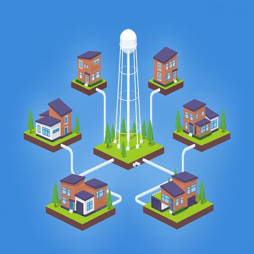

Diseño de redes de agua potable
Modelación, dimensionamiento y verificación de redes de distribución, tanques y estaciones de bombeo, considerando crecimiento futuro y continuidad del servicio. Capañas de detección de fugas con Geófono.
Soluciones integrales para el diseño, evaluación y gestión de la infraestructura hidráulica y ambiental.
Acompañamos a gobiernos, empresas y desarrolladores en la planeación y ejecución de proyectos de agua potable, alcantarillado, saneamiento y gestión de recursos hídricos con enfoque tecnológico.
Agendar una consultaBrindamos servicios especializados en ingeniería hidráulica, sanitaria y ambiental, alineados a la normatividad mexicana y a las mejores prácticas internacionales.
Modelación, dimensionamiento y verificación de redes de distribución, tanques y estaciones de bombeo, considerando crecimiento futuro y continuidad del servicio. Capañas de detección de fugas con Geófono.
Proyecto y evaluación de sistemas de recolección de aguas residuales, emisores, colectores y estaciones de bombeo, con enfoque en operación segura y eficiente.
Diseño de drenaje pluvial urbano, obras de regulación y conducción, así como análisis hidrológico e hidráulico para la mitigación de inundaciones.
Evaluación y diseño de sistemas de tratamiento, selección de procesos, integración a la red y cumplimiento de normas de descarga y reúso.
Elaboración de estudios y manifiestos de impacto ambiental, análisis de riesgos y propuestas de medidas de mitigación y compensación.
Diseño de sistemas de captación pluvial para edificaciones y desarrollos urbanos, con enfoque en aprovechamiento sustentable y resiliencia hídrica.
Determinación de áreas de inundación y zonas federales, asesoría en planeación hídrica, balance de oferta–demanda, manejo de cuencas, indicadores y soporte técnico para la toma de decisiones.
Peritajes, revisiones de proyecto, acompañamiento técnico en licitaciones y supervisión de obra hidráulica y sanitaria.
Consultoría y Construcciones GARMAD integra experiencia en ingeniería de los recursos hídricos, hidráulica urbana y medio ambiente, con una visión orientada a resultados y a la gestión responsable del agua.
Nuestro trabajo se basa en criterios técnicos sólidos, uso de herramientas de modelación y sistemas de información geográfica, así como en el cumplimiento estricto de la normatividad aplicable.
Colaboramos con instituciones públicas y privadas en el desarrollo de proyectos que buscan mejorar la eficiencia de la infraestructura, reducir riesgos hidrometeorológicos y promover un uso sostenible del recurso hídrico.

Si deseas más información sobre nuestros servicios o agendar una reunión técnica, envíanos un mensaje y con gusto te responderemos.
...